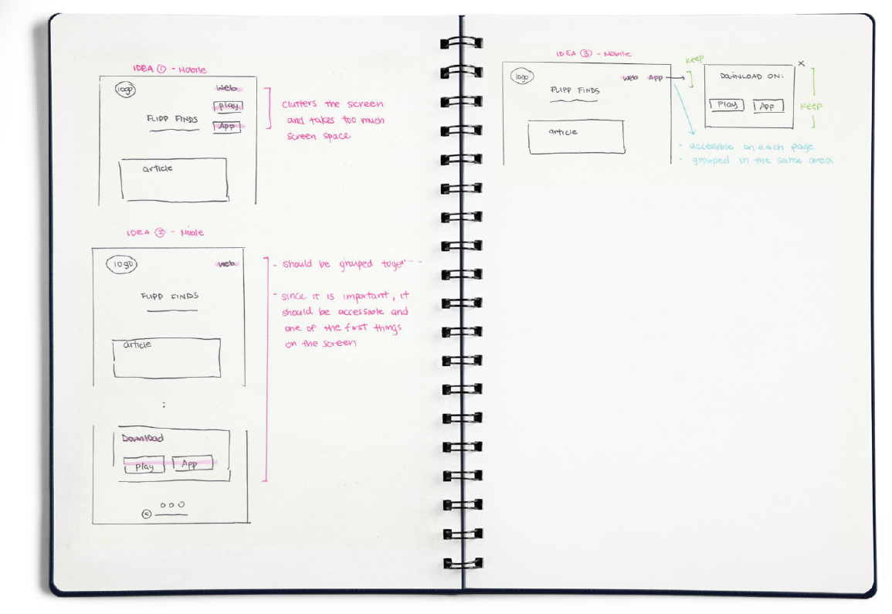

Flipp finds is a blog - a hub for our content that we share with our readers. It highlights how our users can use Flipp to save on money through special holidays or average days. My role in this project was the Designer and Developer. I communicated closely with the marketing team to plan out the goals of the blog. The website can be viewed at finds.flipp.com
A marketing tool that allowed our users to understand Flipp as a brand. A hub for our written content and content that we have partnered with that includes the lifestyle of our users and how they use our product.
lorum ipsum
For readers to read the content that we have partnered with other bloggers. The content is unique to how Flipp can and have been used.
(Currently not in our first iteration, since we do not have a large volume of articles). Allow the read- ers to search for specific articles or authors.
Allows to users to view recent deals or coupons on Flipp
Allows users to subscribe to our weekly emails that lists out what new articles we have published and other news from Flipp.
Where to put all the di erent sections (below each other, or beside articles). Below each other would hide the other sections since it is not located at a prominent location, which can cause users to overlook or not scroll past the articles to view the other sections. (Desk- top). We decided to go with this approach for mobile, since mobile screens are a lot smaller in width therefore we didn’t not have the space to have the sections beside the article. Therefore, we ranked according to the most important to least.
Beside articles allows the sections to be viewed instantly since it is on the whole screen, when the website loads. (Desktop)
